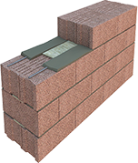
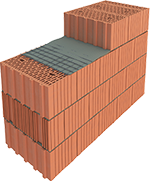
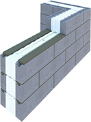
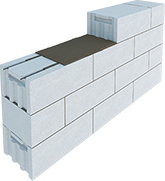

Дом в Киссолово
«Киссолово» – коттеджный посёлок для счастливых семей
| Площадь дома | 122.00 м2 |
| Этажность | 2 |
| Материал | Брус сосновый |
| Фундамент | Ленточный |
| Срок | 2,5 месяца |
Двухэтажный деревянный дом
Проект дома B456 — это прекрасная вилла для проживания большой семьи, которую можно выстроить на большом пригородном участке земли. Строгость внешнего вида придает зданию некоторую грациозность. Большой особняк выглядит стильно, благодаря большому количеству мансард, задекорированных зеленью, с которых можно наблюдать за играющими во дворе детьми. Окна способствуют проникновению естественного света в дом, что позволит снизить потребление энергии. Планировка дома предусматривает наличие гаража, куда можно поставить свой автомобиль. В теплое время года жители дома могут проводить свое свободное время на озелененной придомовой территории.
Пространство первого этажа распределено гармонично. Уютная гостиная оборудована камином, что позволит проводить долгие зимние вечера, сидя в кресле и смотря на огонь. В кухне предусмотрены большие окна, которые придают неимоверный простор, вид из окон скоротает приготовление пищи. Для сосредоточенной и спокойной работы кабинет расположен в задней части дома. На первом этаже также расположена ванная комната, гардероб, кладовая, хозяйственное помещение, а также двухместный гараж.
На втором этаже расположено четыре уютные спальни, в одной из которых есть собственная ванная комната и гардероб. Также есть общая ванная комната, которой могут воспользоваться приехавшие к Вам гости. Красивая терраса, расположенная в переднем фасаде дома, придает изящества и утонченности такой планировке.
Проделанные работы
- Привезли весь материал на участок
- Подготовили место под фундамент
- Заложили фундамент
- Построили 1 этаж
- Построили 2 этаж
- Сделали каркас для крыши
- Накрыли крышу
- Поставили все окна и двери
- Проделана вся внутренняя отделка
- Сделали ландшафтный дизайн на участке
Хронология строительства
Используемые технологии
-

Керамзитобетонные камни
Внешняя стена 400 мм, однослойная конструкция, которая не требует дополнительного утепления
ПодробнееПрочность Энергоэффективность Огнестойкость Надежность Экологичность -

Поризованный кирпич
Внешняя стена до 510 мм, теплый кирпичный дом, который всегда будет в цене
ПодробнееПрочность Энергоэффективность Огнестойкость Надежность Экологичность -

Энергоэффективные блоки
Внешняя стена 350 мм, финская технология строительства, супер теплый дом
ПодробнееПрочность Энергоэффективность Огнестойкость Надежность Экологичность -

Газобетонные блоки
Внешняя стена до 400 мм, бюджетное решение для различных типов домов
ПодробнееПрочность Энергоэффективность Огнестойкость Надежность Экологичность
Вам нужен индивидуальный проект? Проведем оценку Бесплатно!
Оценить свой проект